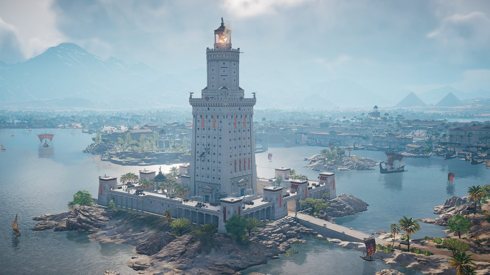

Les 7 merveilles du monde antique
Cette liste nous vient de l'Antiquité
- La pyramide de Khéops

- Les jardins suspendus de Babylone
- La statue de Zeus

- Le temple d'Artémis

- Le mausolée d'Halicarnasse

- Le phare d'Alexandrie 
- Le Colosse de Rhodes

Connaissez-vous les merveilles du monde ?
Cette liste nous vient de l'Antiquité
Il existe des centaines de merveilles référencées au patrimoine mondial par l'Unesco.
Une liste de 7 nouvelles merveilles a été étalie en 2009 à la suite d'un vote par Internet sur une initiative privée.


| Liste des Merveilles | Pays | Siècle | Drapeau |
|---|---|---|---|
| La pyramide de Khéops | Égypte | 2560 av. J.-C. | |
| Les jardins suspendus de Babylone | Irak | 600 av. J.-C. | |
| La statue de Zeus | Grèce | 432 av. J.-C. | |
| Le Colosse de Rhodes | 292 av. J.-C. | ||
| Le temple d'Arthémis | Turquie | 560 av. J.-C. | |
| Le mausolée d'Halicarnasse | 350 av. J.-C. | ||
| Le phare d'Alexandrie | 299 av. J.-C. | ||
| La Grande Muraille de Chine | Chine | 300 av. J.-C. | |
| Pétra | Jordanie | 800 av. J.-C. | |
| Le Christ du Corcovado | Brézil | 1926 ap. J.-C. | |
| Machu Picchu | Pérou | 1500 ap. J.-C. | |
| Chichén Itzá | Méxique | 500 ap. J.-C. | |
| Le Colisée | Italie | 70 ap. J.-C. | |
| Le Taj Mahal | Inde | 1631 ap. J.-C. |